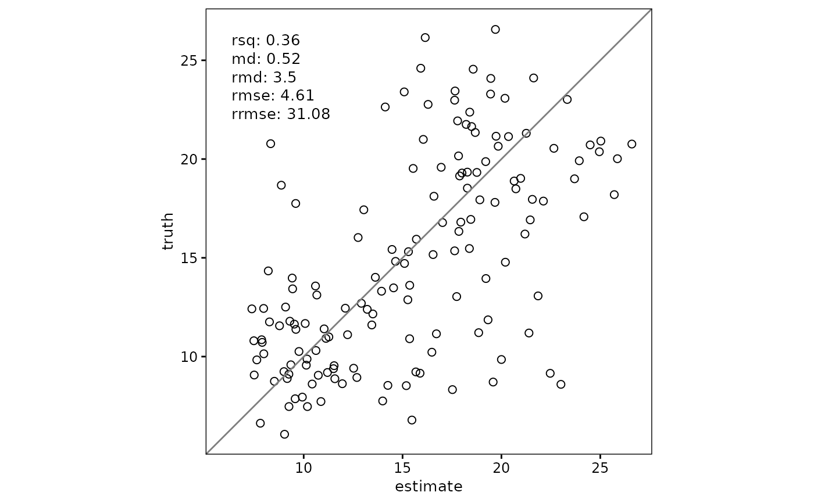
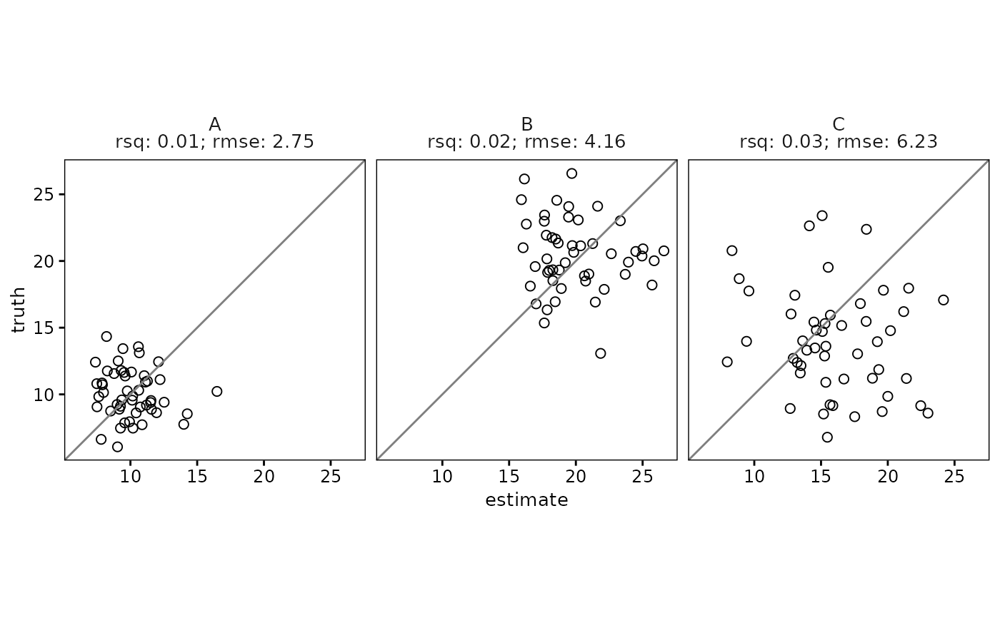
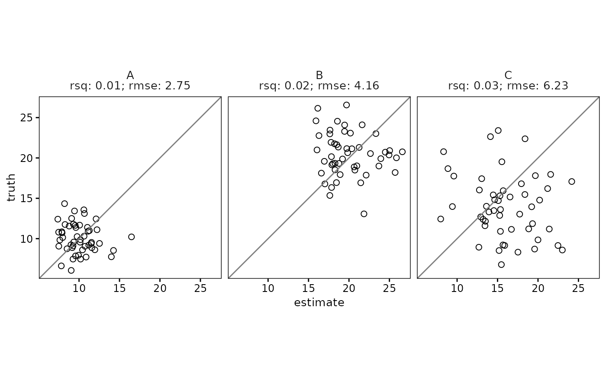

Scatterplot with Truth and Estimate Values
scatter.RdThis function creates a scatterplot comparing `truth` and `estimate` values. It supports grouped data, adding facets for each group, and can optionally include agreement metrics as text annotations in the plot. Metrics can be positioned either inside the plot area or outside as subtitles or facet labels.
Usage
scatter(
data,
truth,
estimate,
metrics = list(rsq, md, rmd, rmse, rrmse),
metrics_position = "inside",
metrics_inside_placement = "upperleft",
...
)Arguments
- data
A data frame or tibble. Can be grouped (using `dplyr::group_by`) to create faceted plots.
- truth
The column name in `data` containing truth values. Should be unquoted.
- estimate
The column name in `data` containing estimate values. Should be unquoted.
- metrics
A list of metrics to compute and display. Metrics can include almost any function from the `yardstick` package (e.g., `rsq`, `rmse`, `mape`). Defaults to `list(rsq, md, rmd, rmse, rrmse)`. Set to `NULL` to disable.
- metrics_position
A character string indicating where to display metrics. Options are `"inside"` (as annotations within the plot) or `"outside"` (as subtitle or facet labels). Defaults to `"inside"`.
- metrics_inside_placement
A character string indicating the position of the metrics within the plot. Options are "upperright", "upperleft", "lowerright", or "lowerleft". Defaults to "upperright".
- ...
Additional parameters to control point aesthetics, including: - `points_color`: Color of points (default is "black"). - `points_size`: Size of points (default is 2). - `points_shape`: Shape of points (default is 1). - `points_alpha`: Transparency of points (default is 1). - `text_size`: text size for the displayed metrics (default is 10 pt) - `text_background_alpha`: change the transparency of the metrics text background (default is 0.5). Disable with 0 (fully transparent) - `metrics_nlines`: allow to split the metrics text into n lines (default is 1 line)
Details
The function dynamically calculates axis ranges based on the `truth` and `estimate` values, ensuring a square plot using `coord_fixed()`. For grouped data, it uses `facet_wrap` to create separate scatterplots for each group.
Agreement metrics are calculated using the `agreement_metrics` function, and their display depends on the value of `metrics_position`. For grouped data with `metrics_position = "outside"`, metrics are added to the facet labels, while for `metrics_position = "inside"`, they are displayed within each plot as annotations.
Examples
library(dplyr)
library(ggplot2)
# Example data
set.seed(123)
df <- data.frame(
group = rep(c("A", "B", "C"), each = 50),
truth = c(rnorm(50, 10, 2), rnorm(50, 20, 3), rnorm(50, 15, 4)),
estimate = c(rnorm(50, 10, 2), rnorm(50, 20, 3), rnorm(50, 15, 4))
)
# Simple scatterplot
scatter(df, truth, estimate)

# Scatterplot with agreement metrics (inside plot)
scatter(df, truth, estimate, metrics = list(rsq, mape))
# Scatterplot with agreement metrics (outside plot as subtitle)
scatter(df, truth, estimate, metrics = list(rsq, rmse), metrics_position = "outside")
# Grouped scatterplot with agreement metrics inside
df %>%
group_by(group) %>%
scatter(truth, estimate, metrics = list(rsq,rmse,rrmse), metrics_position = "inside")
 # Grouped scatterplot with agreement metrics outside as facet labels
df %>%
group_by(group) %>%
scatter(truth, estimate, metrics = list(rsq, rmse), metrics_position = "outside")

# Grouped scatterplot with agreement metrics outside as facet labels
df %>%
group_by(group) %>%
scatter(truth, estimate, metrics = list(rsq, rmse), metrics_position = "outside")
